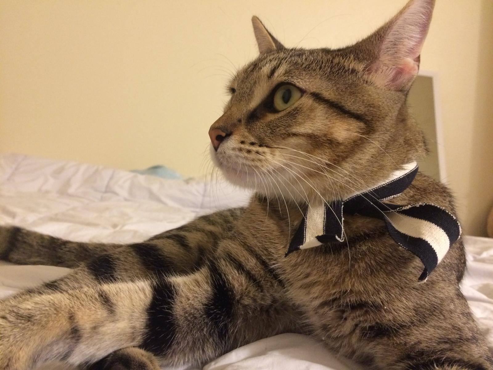

I am a predoctoral appointee in the MCS division at Argonne National Laboratory under the mentorship of Dr. Prasanna Balaprakash. I am also a PhD candidate at the School of Mechanical and Aerospace Engineering at Oklahoma State University (due to graduate in Spring 2019 after which I transition to a Postdoctoral position here at MCS). My research deals with the use of data-driven techniques for the model order reduction of computationally expensive problems governed by nonlinear PDEs. Most of my work has revolved around the use of artificial neural networks formulated for regression which act as corrections to truncated systems being evolved by transformed governing laws.
My graduate adviser is Dr. Omer San, PI at the Computational Fluid Dynamics Laboratory where we endeavor to investigate elegant combinations of machine learning algorithms and physics based models for the computational sciences. You may find more information about my background and research interests, along with a list of publications here.
I decided to name my cat Gauss, after picking him up from the shelter due to his intense curiosity about everything around him. He loves sniffing around and contemplating his surroundings, much like his medieval counterpart did with mathematics and the natural sciences. In addition, he's a proper cat model!
